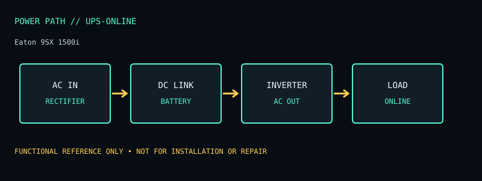

[ ONLINE UPS // MODEL RECORD ]
Eaton 9SX 1500i
230 V online UPS, 1500 VA / 1350 W, IEC outlets, network-card option. The specifications below are for this named model and region only; verify the complete product label and matching manual before deployment or service.

ARCHIVAL IDENTIFICATION: Preserve the complete SKU, suffix, region, date code, revision, installed battery part (if present), firmware and physical condition. Similar model names do not establish hardware equivalence.
Specifications, conditions & service
| Catalog subcategory | Online UPS |
|---|---|
| Topology / power path | Online double-conversion (VFI): rectifier and inverter continuously condition output; battery supports the DC link during mains failure. |
| Ratings / output configuration | 1500 VA / 1350 W; 230 V regional SKU. Eight IEC C13 outputs on the 9SX1500i configuration. Check the exact product suffix/label for outlet and input details. |
| Battery / replaceability | Internal sealed lead-acid battery; 9SX series supports battery replacement/service as documented. Use only Eaton-listed pack and procedure. |
| Runtime / limits and conditions | Eaton runtime graphs are load dependent; use the graph for 9SX1500i and actual watts. Runtime varies with battery age/condition, charge, ambient temperature and any approved external modules; do not transfer estimates from another rating. |
| Interfaces / monitoring | LCD; USB and RS-232; communication slot supports compatible optional network/relay cards. Confirm card, cable and host software compatibility. |
| Safety / installation caveats | 230 V only. Observe 1350 W and IEC outlet limits. Online conversion has continuous conversion losses/heat; provide specified ventilation. Battery replacement does not make opening an energized chassis safe. |
| Model variants / revision checks | 9SX1500i is distinct from 9SX1500 (other region) and 9SX1500IRT; connector set and battery/accessory configuration differ by SKU. |
Field service / archive notes
- Record labels and connector layout before installation; document load, input conditions, measured behavior and test date separately from manufacturer-rated values.
- Never open energized mains equipment. Battery devices can retain dangerous voltage or high fault current; follow the manufacturer’s replacement and recycling procedure.
- Inspect enclosure, cord, plugs, grounding, indicators, alarms and battery condition. Quarantine damaged, swollen, leaking or heat-affected equipment.
- Network-management appliances should be isolated, updated where supported and configured with non-default credentials; do not expose legacy management interfaces directly to the public internet.
Manufacturer references
- Manufacturer product listing — Eaton 9SX 1500iModel identity and product-family specification reference. Confirm exact regional SKU against the chassis label.
- Manufacturer manual / support documentationConsult the version matching the exact SKU. Runtime references are load- and condition-dependent estimates where supplied, never a guarantee for a particular aged unit.